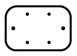
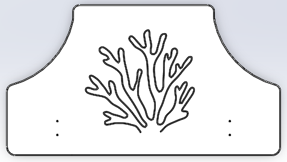
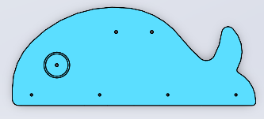
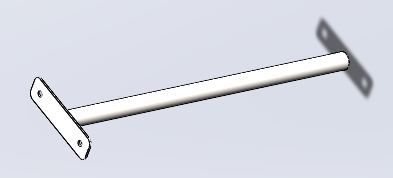

1нетфото0002МПЗакладная для песочницы (уголок 50х50х500)Excel · строка 5Технические данныеДлина, м0.3Ширина, м0.1Высота, м0.1Цвет / покрытиеНе указан4шт.
20001МПРучка песочницы ПСР-1.04Excel · строка 6Технические данныеДлина, м0.075Ширина, м0.075Высота, м0.26Цвет / покрытие70152шт.
30003МПУголок 55x55x40Excel · строка 7Технические данныеДлина, м0.062Ширина, м0.062Высота, м0.04Цвет / покрытие701510шт.
4000003_ПБорт верхний (песочницы)_ПНДExcel · строка 8Технические данныеДлина, м1.76Ширина, м0.145Высота, м0.021Цвет / покрытие70384шт.
5000004_ПБорт боковой (песочницы)_ПНДExcel · строка 9Технические данныеДлина, м0.76Ширина, м0.224Высота, м0.021Цвет / покрытие50028шт.
6000002_ПСоединитель бортов (песочницы)_ПНДExcel · строка 10Технические данныеДлина, м0.3Ширина, м0.2Высота, м0.015Цвет / покрытие30204шт.
7000005_ПСтолик угловой (песочницы)_ПНДExcel · строка 11Технические данныеДлина, м0.411Ширина, м0.411Высота, м0.015Цвет / покрытие30204шт.
8002174_ПКрышка песочницы ПСР-1.56 с выбокой "коралл" (1590х875)_ПНДExcel · строка 12Технические данныеДлина, м1.59Ширина, м0.875Высота, м0.021Цвет / покрытие70382шт.
9002175_ПКит песочницы ПСР-1.56 (750х320)_ПНДExcel · строка 13Технические данныеДлина, м0.75Ширина, м0.32Высота, м0.021Цвет / покрытие50022шт.
100004МППодпорка головы (песочница-букашка)Excel · строка 14Технические данныеДлина, м0.062Ширина, м0.062Высота, м0.04Цвет / покрытие70152шт.
11Артикул не указанКолпачок пластиковый составной М6-27Excel · строка 16Технические данныеДлина, м0.027Ширина, м0.027Высота, м0.016Цвет / покрытиеЦвет, RAL черный62шт.
12Артикул не указанКолпачок пластиковый составной М8-32,5Excel · строка 17Технические данныеДлина, м0.036Ширина, м0.036Высота, м0.023Цвет / покрытиеЦвет, RAL черный36шт.